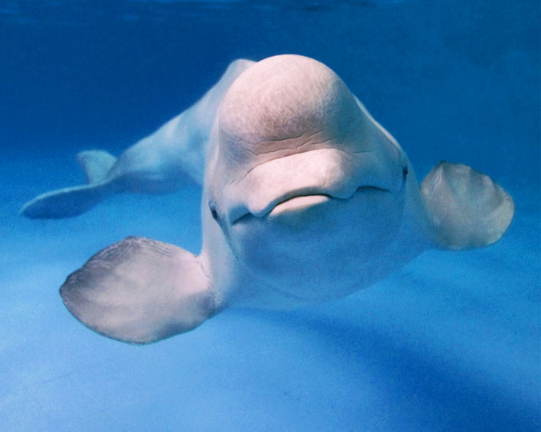

Beluga Whale
The white colouration of the beluga skin is an adaptation to life in the Arctic that allows belugas to camouflage themselves in the polar ice caps as protection against their main predators, polar bears and killer whales.
The Beluga Whale, also known as the White Whale, the melonhead, the sea canary (or simply, the beluga), is a mid-sized toothed whale species. Moving around in small groups or pods mainly in the Arctic waters, every year they draw a large number of tourists to Alaska, where they are one of the most popular aquatic animals.